Taller Modelos especiales continuos
dgonzalez80
Problemas
Distribucion uniforme
- Para una variable aleatoria \(X\sim unif(x,a,b)\) con \(a=10\) y \(b=20\) determine:
(a.) Construya un bosquejo de la gráfica de la función de densidad de probabilidad \(f_{_{X}}(x)\).
p=ggdistribution(dunif, seq(10, 20, 0.1),min=10,max=20 ,colour = 'blue')+
ggtitle("Distribucion uniforme [10,20]")
p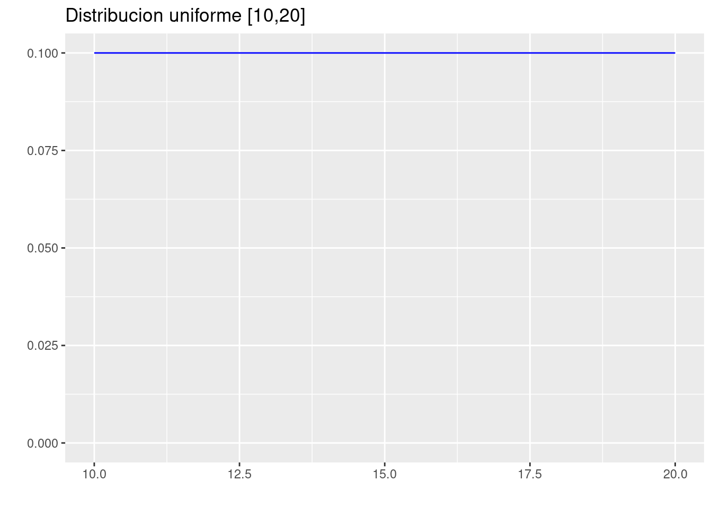
(b.) \(P(X \leq 12)\).
punif(12,10,20)[1] 0.2(c.) \(P(13\leq X <15)\).
punif(15,10,20)-punif(13,10,20)[1] 0.2(d.) \(P(X\geq 18)\) .
punif(18,10,20, lower.tail = FALSE)[1] 0.2(e.) $E[X] $ y \(V[X]\).
Ex=(10+20)/2; Ex[1] 15Vx=(20-10)^2/12; Vx[1] 8.333333Distribucion normal
- Para una variable \(Z\sim N(0,1)\), determine el área:
(a.) A la derecha de \(z = - 0.85\).
pnorm(-0.85, lower.tail = FALSE)[1] 0.8023375p=ggdistribution(dnorm, seq(-4, 4, 0.1), mean = 0, sd = 1,colour = 'blue')
p=ggdistribution(dnorm, seq(-0.85, 4, 0.1), mean = 0, sd = 1,colour = 'blue', fill="blue", p=p)+
ggtitle("Distribucion Nornal estandar N(0,1) P(Z>-0.85)")
p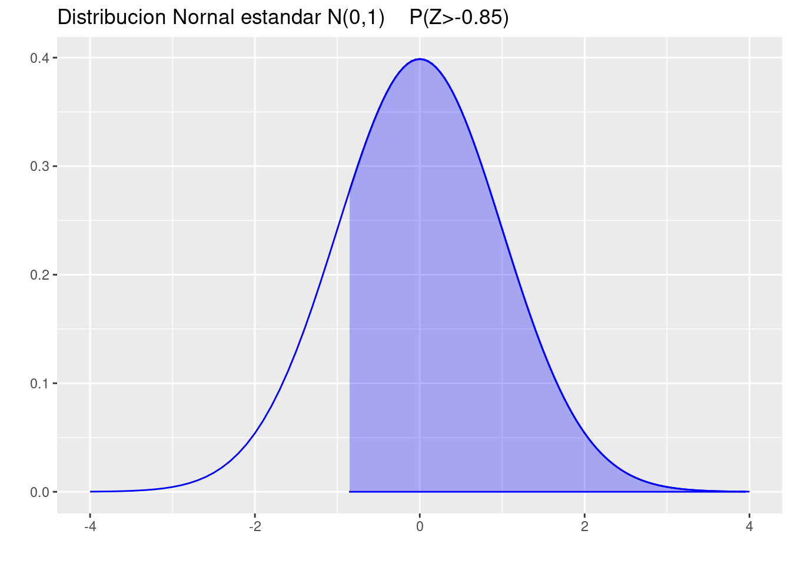
(b.) Entre \(z = 0.40\) y \(z = 1.30\).
pnorm(1.30)-pnorm(0.40)[1] 0.2477778p=ggdistribution(dnorm, seq(-4, 4, 0.1), mean = 0, sd = 1,colour = 'blue')
p=ggdistribution(dnorm, seq(-1.30, 0.40, 0.1), mean = 0, sd = 1,colour = 'blue', fill="blue", p=p)+
ggtitle("Distribucion Nornal estandar N(0,1) P(0.40<Z<1.30)")
p(c.) Entre \(z = -0.30\) y \(z = 0.90\).
pnorm(0.90)-pnorm(-0.30)[1] 0.4338513p=ggdistribution(dnorm, seq(-4, 4, 0.1), mean = 0, sd = 1,colour = 'blue')
p=ggdistribution(dnorm, seq(-0.30, 0.90, 0.1), mean = 0, sd = 1,colour = 'blue', fill="blue", p=p)+
ggtitle("Distribucion Nornal estandar N(0,1) P(-0.30<Z<0.90)")
p(d.) Desde \(z = -1.50\) hasta \(z = -0.45\).
pnorm(-0.45)-pnorm(-1.50)[1] 0.259548p=ggdistribution(dnorm, seq(-4, 4, 0.1), mean = 0, sd = 1,colour = 'blue')
p=ggdistribution(dnorm, seq(-1.50,-0.45 , 0.1), mean = 0, sd = 1,colour = 'blue', fill="blue", p=p)+
ggtitle("Distribucion Nornal estandar N(0,1) P(-1.50 <Z<-0.45)")
p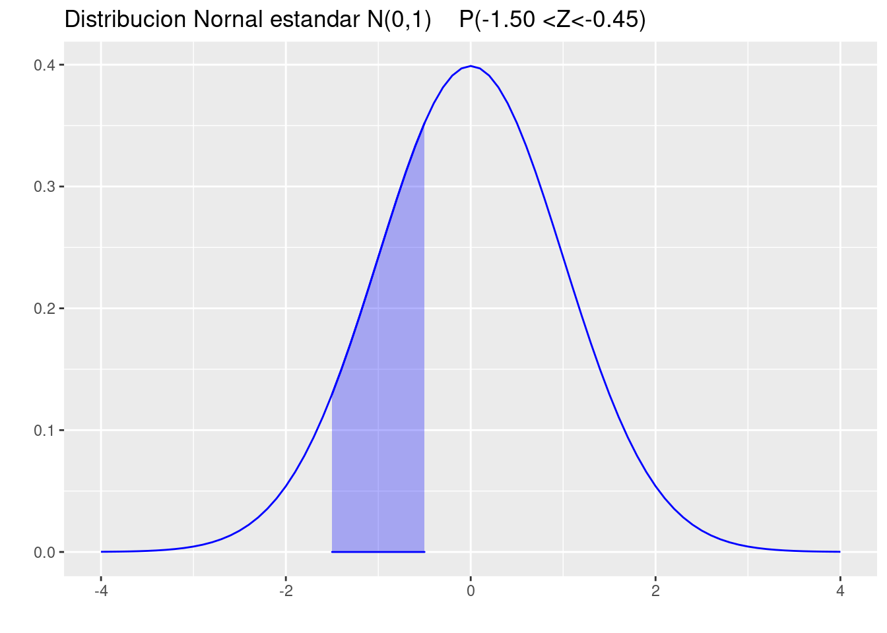
Nota: en cada caso realice un bosquejo del área que representa la probabilidad
- Para una variable \(Z\sim N(0,1)\), determine el área:
(a.) A la izquierda de \(z = 0.56\).
pnorm(0.56)[1] 0.7122603p=ggdistribution(dnorm, seq(-4, 4, 0.1), mean = 0, sd = 1,colour = 'blue')
p=ggdistribution(dnorm, seq(-4, -0.56, 0.1), mean = 0, sd = 1,colour = 'blue', fill="blue", p=p)+
ggtitle("Distribucion Nornal estandar N(0,1) P(Z<-0.56)")
p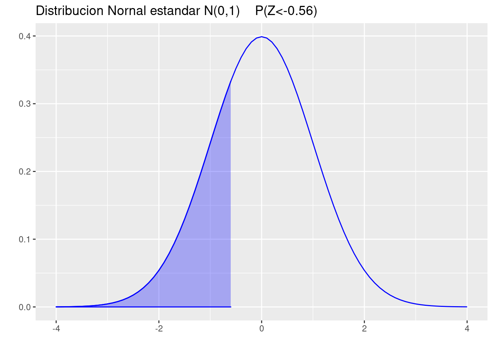
(b.) Entre \(z = -2.93\) y \(z = -2.06\).
pnorm(-2.06)-pnorm(-2.93)[1] 0.01800446p=ggdistribution(dnorm, seq(-4, 4, 0.1), mean = 0, sd = 1,colour = 'blue')
p=ggdistribution(dnorm, seq(-2.93, -2.06, 0.1), mean = 0, sd = 1,colour = 'blue', fill="blue", p=p)+
ggtitle("Distribucion Nornal estandar N(0,1) P(-2.93<Z<-2.06)")
p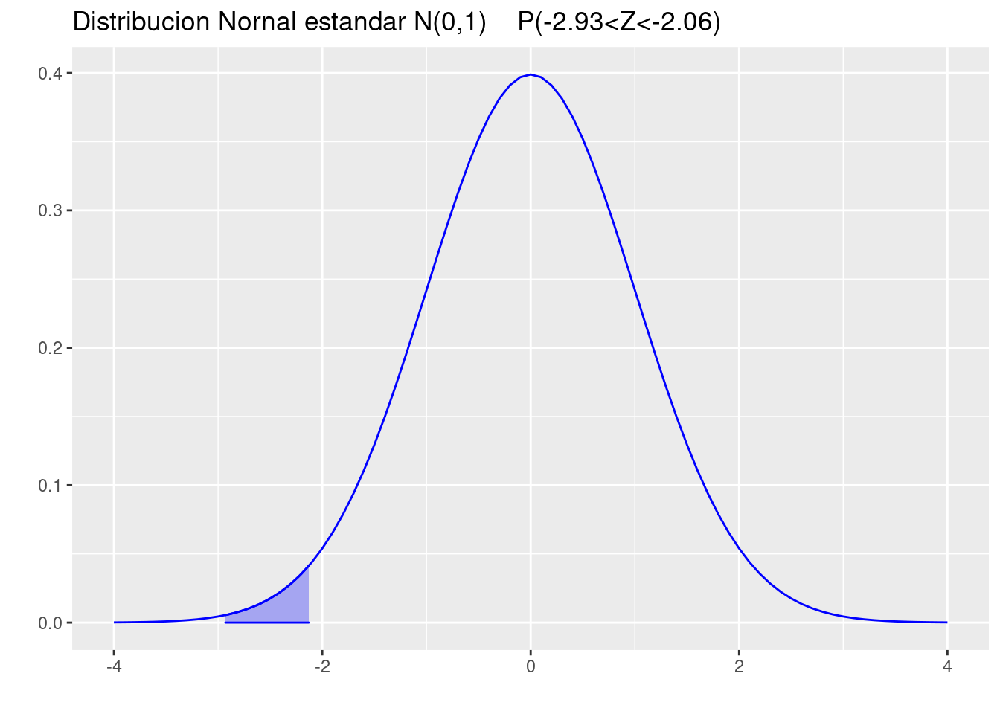
(c.) Entre \(z = -1.08\) y \(z = 0.70\).
pnorm(0.70)-pnorm(-1.08)[1] 0.6179653p=ggdistribution(dnorm, seq(-4, 4, 0.1), mean = 0, sd = 1,colour = 'blue')
p=ggdistribution(dnorm, seq(-1.08, 0.70, 0.1), mean = 0, sd = 1,colour = 'blue', fill="blue", p=p)+
ggtitle("Distribucion Nornal estandar N(0,1) P(-1.08<Z<0.70)")
p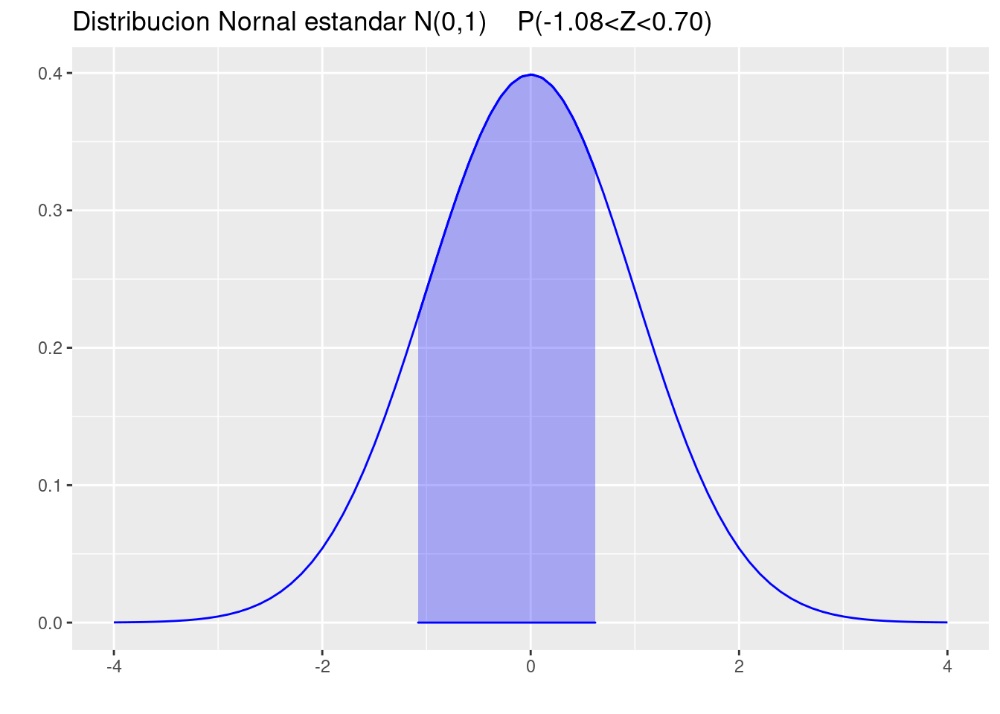
(d.) Desde \(z = 0.96\) hasta \(z = 1.62\).
pnorm(1.62)-pnorm(0.96)[1] 0.1159115p=ggdistribution(dnorm, seq(-4, 4, 0.1), mean = 0, sd = 1,colour = 'blue')
p=ggdistribution(dnorm, seq(0.96, 1.62, 0.1), mean = 0, sd = 1,colour = 'blue', fill="blue", p=p)+
ggtitle("Distribucion Nornal estandar N(0,1) P(0.96<Z<1.62)")
pNota: En cada caso represente gráficamente los valores solicitados
- Para una variable aleatoria continua \(X\sim norm(\mu=150, \sigma^{2}=1000)\) determine:
(a.) Realice la gráfica de la función de densidad de probabilidad de \(X\)
p=ggdistribution(dnorm, seq(50, 250, 0.1), mean = 150, sd = sqrt(1000),colour = 'blue')+
ggtitle("Distribucion Nornal estandar N(150,1000)")
p(b.) \(P(X \leq 100)\).
pnorm(100,150, sqrt(1000))[1] 0.05692315p=ggdistribution(dnorm, seq(50, 250, 0.1), mean = 150, sd = sqrt(1000),colour = 'blue')
p=ggdistribution(dnorm, seq(50, 100, 0.1), mean = 150, sd = sqrt(1000),colour = 'blue', fill="blue", p=p)+
ggtitle("Distribucion Nornal estandar N(150,1000) P(X<100)")
p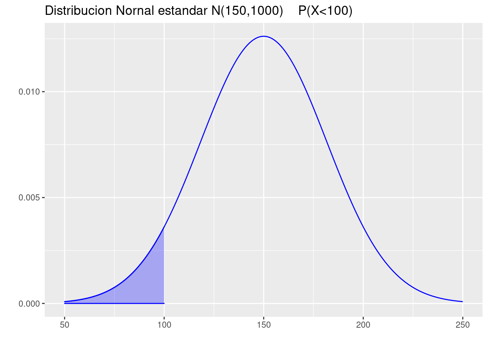
(c.) \(P(150 \leq X \leq 200)\).
pnorm(200,150, sqrt(1000))-0.50[1] 0.4430769p=ggdistribution(dnorm, seq(50, 250, 0.1), mean = 150, sd = sqrt(1000),colour = 'blue')
p=ggdistribution(dnorm, seq(150, 200, 0.1), mean = 150, sd = sqrt(1000),colour = 'blue', fill="blue", p=p)+
ggtitle("Distribucion Nornal estandar N(150,1000) P(150<X<200)")
p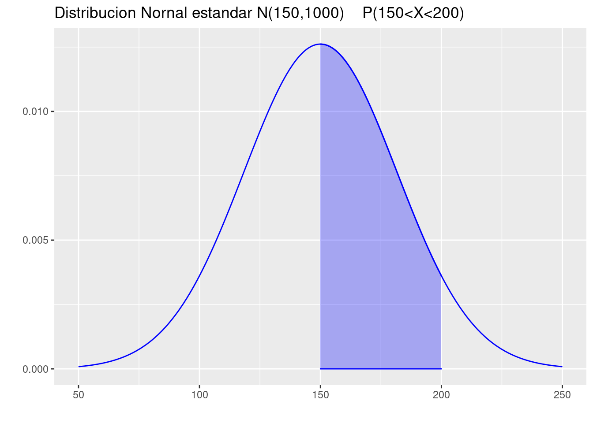
(d.) \(P(X\geq 50)\).
pnorm(50,150, sqrt(1000), lower.tail = FALSE)[1] 0.9992173p=ggdistribution(dnorm, seq(40, 260, 0.1), mean = 150, sd = sqrt(1000),colour = 'blue')
p=ggdistribution(dnorm, seq(50, 260, 0.1), mean = 150, sd = sqrt(1000),colour = 'blue', fill="blue", p=p)+
ggtitle("Distribucion Nornal estandar N(150,1000) P(X>50)")
p
(e.) Determine el valor de \(k\) que cumpla : \(P(-k < X < k)= 0.90\).
qnorm(0.95,150,sqrt(1000))[1] 202.0148(f.) Determine el valor de \(k\) que cumpla : \(P(-k < X < k)= 0.95\).
qnorm(0.975,150,sqrt(1000))[1] 211.9795Distribucion exponencial
- Sea \(X\) una variable aleatoria con distribución exponencial . (\(X\sim exp(\lambda=2)\)). Determine:
(a.) \(P(X \leq 0)\).
pexp(0,2)[1] 0p=ggdistribution(dexp, seq(0, 3, 0.1),rate=2 ,colour = 'blue')
p=ggdistribution(dexp, seq(0, 0, 0.1),rate=2 ,colour = 'blue',fill = "blue", p=p)+
ggtitle("Distribucion exponencial E[X]=2 P(X<=0)")
p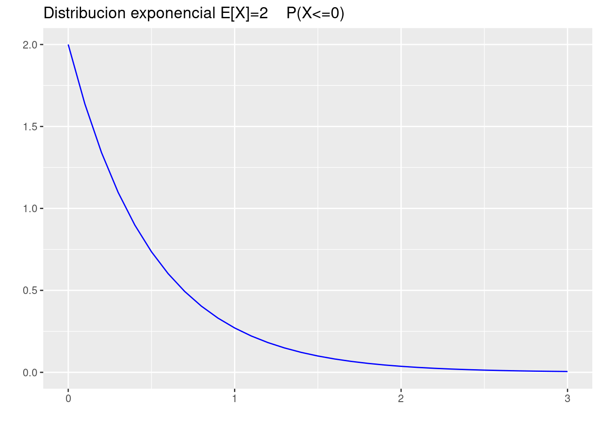
(b.) \(P(X \geq 2)\).
pexp(2,2, lower.tail = FALSE)[1] 0.01831564p=ggdistribution(dexp, seq(0, 3, 0.1),rate=2 ,colour = 'blue')
p=ggdistribution(dexp, seq(2, 3, 0.1),rate=2 ,colour = 'blue',fill = "blue", p=p)+
ggtitle("Distribucion exponencial E[X]=2 P(X>2)")
p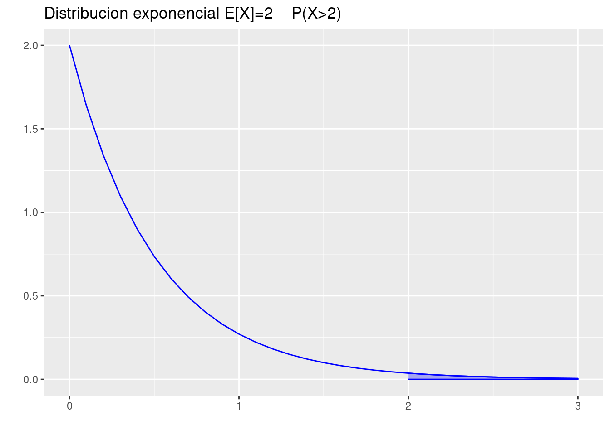
(c.) \(P(1 < X < 2)\).
pexp(2,2)-pexp(1,2)[1] 0.1170196p=ggdistribution(dexp, seq(0, 3, 0.1),rate=2 ,colour = 'blue')
p=ggdistribution(dexp, seq(1, 2, 0.1),rate=2 ,colour = 'blue',fill = "blue", p=p)+
ggtitle("Distribucion exponencial E[X]=2 P(1<X<2)")
p(d.) Realice la gráfica de \(f_{_{X}}(x)\)
p=ggdistribution(dexp, seq(0, 3, 0.1),rate=2 ,colour = 'blue')+
ggtitle("Distribucion exponencial E[X]=2 ")
p
Distribucion lognormal
Sea \(X\) una variable aleatoria continua con función de distribución lognormal con parámetros \(\mu=0.8\) y \(\sigma=1.2\). Determine.
- \(P(X<10)\)
p=ggdistribution(dlnorm, seq(0, 20, 0.1),meanlog=0.8,sdlog=1.2 ,colour= 'blue')
p=ggdistribution(dlnorm, seq(0, 10, 0.1),meanlog=0.8,sdlog=1.2 ,colour= 'blue', fill = "blue", p=p)+
ggtitle("Distribucion Lognormal (0.8,1.2) P(X<10)")
pplnorm(10, 0.8,1.2)[1] 0.8947432- \(P(X>5)\)
p=ggdistribution(dlnorm, seq(0, 20, 0.1),meanlog=0.8,sdlog=1.2 ,colour= 'blue')
p=ggdistribution(dlnorm, seq(5, 20, 0.1),meanlog=0.8,sdlog=1.2 ,colour= 'blue', fill = "blue", p=p)+
ggtitle("Distribucion Lognormal (10,16) P(X>5) ")
pplnorm(5, 0.80,1.2, lower.tail = FALSE)[1] 0.2499867\(P_{75}\)
Realice una gráfica de \(f(x)\)
p=ggdistribution(dlnorm, seq(0, 20, 0.1),meanlog=0.8,sdlog=1.2 ,colour= 'blue')+
ggtitle("Distribucion Lognormal (log(20000),1)")
pDistribucion gamma
Sea \(X\) una variable aleatoria continua con funcion de distribucion gamma parametros \(a=3\) y \(b=1\). Determine:
- \(P(X<5)\)
p=ggdistribution(dgamma, seq(0, 10, 0.1),shape=3,rate=1 ,colour= 'blue')
p=ggdistribution(dgamma, seq(0, 5, 0.1),shape=3,rate=1 ,colour= 'blue', fill = "blue", p=p)+
ggtitle("Distribucion gamma a=3 b=1 P(X<5)")
p
pgamma(5,3,1)[1] 0.875348- \(P(5<X>7.5)\)
p=ggdistribution(dgamma, seq(0, 10, 0.1),shape=3,rate=1 ,colour= 'blue')
p=ggdistribution(dgamma, seq(0, 5, 0.1),shape=3,rate=1 ,colour= 'blue', fill = "blue", p=p)
p=ggdistribution(dgamma, seq(7.5, 10, 0.1),shape=3,rate=1 ,colour= 'blue', fill = "blue", p=p)+
ggtitle("Distribucion gamma a=3 b=1 P(5< X >7.5)")
ppgamma(5,3,1)+pgamma(7.5,3,1, lower.tail = FALSE)[1] 0.8956047- \(P_{25}\)
qgamma(0.25,3,1)[1] 1.727299- Realice una gráfica de \(f(x)\)
p=ggdistribution(dgamma, seq(0, 10, 0.1),shape=3,rate=1 ,colour= 'blue')+
ggtitle("Distribucion gamma a=3 b=1")
pDistribucion Weibull
Sea \(X\) una variable con distribución Weibull con \(\alpha=0.01\) y \(\beta=2\). determine:
Nota: Se requiere realizar una transformación de los parámetros \(\alpha\) y \(\beta\) a los parámetros \(a\) y \(b\) para utilizar la función de la distribución Weibull en R así:
\(a = \beta\)
\(b= (\defrac{1}{\alpha})^{1/\beta}\)
En ese caso
a=2
b=(1/0.01)^(1/2)
a[1] 2b[1] 10- \(P(X<10)\)
p=ggdistribution(dweibull, seq(0, 30, 0.01),shape=a,scale=b ,colour = 'blue')
p=ggdistribution(dweibull, seq(0, 10, 0.01),shape=a,scale=b ,colour = 'blue',fill = "blue", p=p)+
ggtitle("Distribucion Weibull [a=0.01 b=2] P(X<10)")
p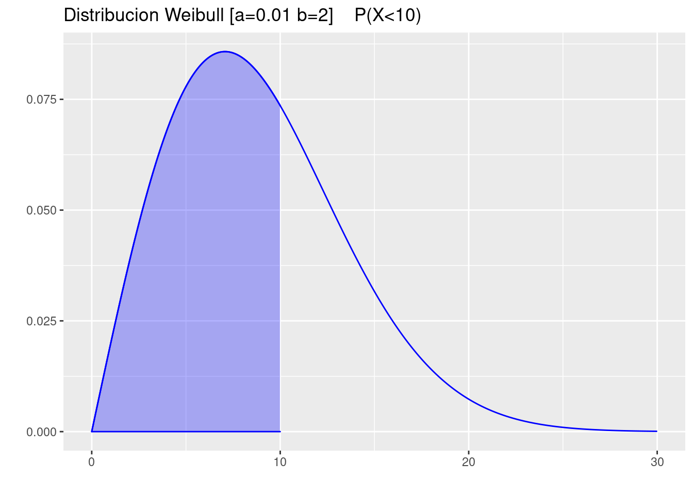
pweibull(10,a,b)[1] 0.6321206- \(P(>9)\)
p=ggdistribution(dweibull, seq(0, 30, 0.01),shape=a,scale=b ,colour = 'blue')
p=ggdistribution(dweibull, seq(9, 30, 0.01),shape=a,scale=b ,colour = 'blue',fill = "blue", p=p)+
ggtitle("Distribucion Weibull [a=0.01 b=2] P(X>9)")
ppweibull(9,a,b,lower.tail = FALSE)[1] 0.4448581- \(P(8<X<11)\)
p=ggdistribution(dweibull, seq(0, 30, 0.01),shape=a,scale=b ,colour = 'blue')
p=ggdistribution(dweibull, seq(8, 11, 0.01),shape=a,scale=b ,colour = 'blue',fill = "blue", p=p)+
ggtitle("Distribucion Weibull [a=0.01 b=2] P(8<X<11)")
p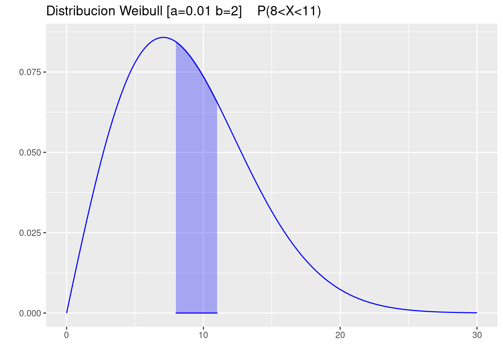
pweibull(11,shape=a,b)-pweibull(8,shape=a,scale=b)[1] 0.2290951- Determine el valor de \(x\) tal que \(P(X>x)=0.9\)
qweibull(0.1,shape=a,scale=b)[1] 3.245928- Realice la gráfica de la función de densidad de probabilidad de \(X\)
p=ggdistribution(dweibull, seq(0, 30, 0.01),shape=a,scale=b ,colour = 'blue')+
ggtitle("Distribucion Weibull [a=0.01 b=2]")
pDistribucion beta
Suponga que X tiene una distribución beta con con parámetros a=4, b=2.
- \(P(X<0.40)\)
p=ggdistribution(dbeta, seq(0, 1, 0.01), shape1=4,shape2=2,colour = 'blue')
p=ggdistribution(dbeta, seq(0, .4, 0.01), shape1=4,shape2=2,colour = 'blue',fill ="blue", p=p)+
ggtitle("Distribucion beta (4,2)")
ppbeta(0.40,shape1=4,shape2=2 )[1] 0.08704- \(P(>0.90)\)
p=ggdistribution(dbeta, seq(0, 1, 0.01), shape1=4,shape2=2,colour = 'blue')
p=ggdistribution(dbeta, seq(0.9, 1, 0.01), shape1=4,shape2=2,colour = 'blue',fill ="blue", p=p)+
ggtitle("Distribucion beta (4,2)")
ppbeta(0.90,shape1=4,shape2=2, lower.tail = FALSE )[1] 0.08146- \(P(0.80<X<1)\)
p=ggdistribution(dbeta, seq(0, 1, 0.01), shape1=4,shape2=2,colour = 'blue')
p=ggdistribution(dbeta, seq(0.80,1, 0.01), shape1=4,shape2=2,colour = 'blue',fill ="blue", p=p)+
ggtitle("Distribucion beta (4,2)")
ppbeta(0.80,shape1=4,shape2=2, lower.tail = FALSE )[1] 0.26272- Determine el valor de \(x\) tal que \(P(X>x)=0.90\)
qbeta(0.10,shape1=4,shape2=2)[1] 0.4161096- Realice la gráfica de la función de densidad de probabilidad de \(X\)
p=ggdistribution(dbeta, seq(0, 1, 0.01), shape1=4,shape2=2,colour = 'blue')+
ggtitle("Distribucion beta (4,2)")
pDistribucion Gumbel
Suponga que X tiene una distribución beta con con parámetros a=3, b=4.
- \(P(X<10)\)
library(dgumbel)
p=ggdistribution(dgumbel, seq(-5, 25, 0.01), location=3, scale=4, ,colour = 'blue')
p=ggdistribution(dgumbel, seq(-5, 10, 0.01), location=3, scale=4, ,colour = 'blue', fill = "blue",p=p)+
ggtitle("Distribucion Gumbel(3,4)")
ppgumbel(10,location=3, scale=4)[1] 0.8404869- \(P(>9)\)
library(dgumbel)
p=ggdistribution(dgumbel, seq(-5, 25, 0.01), location=3, scale=4, ,colour = 'blue')
p=ggdistribution(dgumbel, seq(9, 25, 0.01), location=3, scale=4, ,colour = 'blue', fill = "blue",p=p)+
ggtitle("Distribucion Gumbel(3,4)")
ppgumbel(9,location=3, scale=4, lower.tail = FALSE)[1] 0.1999893- \(P(8<X<10)\)
library(dgumbel)
p=ggdistribution(dgumbel, seq(-5, 25, 0.01), location=3, scale=4, ,colour = 'blue')
p=ggdistribution(dgumbel, seq(8, 10, 0.01), location=3, scale=4, ,colour = 'blue', fill = "blue",p=p)+
ggtitle("Distribucion Gumbel(3,4)")
ppgumbel(10,location=3, scale=4)-pgumbel(8,location=3, scale=4)[1] 0.0896034- Determine el valor de \(x\) tal que \(P(X>x)=0.80\)
library(dgumbel)
qgumbel(0.20,location=3, scale=4)[1] 1.09646- Realice la gráfica de la función de densidad de probabilidad de \(X\)
library(dgumbel)
p=ggdistribution(dgumbel, seq(-5, 25, 0.01), location=3, scale=4, ,colour = 'blue')+
ggtitle("Distribucion Gumbel(3,4)")
pDistribucion Cauchy
Suponga que \(X\) tiene una distribución de Cauchy con parámetros \(\mu=0.75\) y \(\theta =5\), determine:
- \(P(X > 7.2)\)
pcauchy(7.2,location = 5, scale =0.75, lower.tail = FALSE)[1] 0.1045817p=ggdistribution(dcauchy, seq(0, 15, 0.01),location = 5, scale =0.75 ,colour = 'blue')
p=ggdistribution(dcauchy, seq(7.2, 15, 0.01),location = 5, scale =0.75 ,colour = 'blue', fill = "blue", p=p)+
ggtitle("Distribucion Cauchy [l=5 s=0.75] P(X>7.2)")
p- \(P( 5<X<10)\)
p=ggdistribution(dcauchy, seq(0, 15, 0.01),location = 5, scale =0.75 ,colour = 'blue')
p=ggdistribution(dcauchy, seq(5, 10, 0.01),location = 5, scale =0.75 ,colour = 'blue', fill = "blue", p=p)+
ggtitle("Distribucion Cauchy [l=5 s=0.75] P(5<X<10)")
ppcauchy(10,location = 5, scale =0.75)-pcauchy(5,location = 5, scale =0.75)[1] 0.4526069- \(Me=Q_{2}\)
qcauchy(0.5,location = 5, scale =0.75)[1] 5- Realice la gráfica de \(f(x)\)
p=ggdistribution(dcauchy, seq(0, 15, 0.01),location = 5, scale =0.75 ,colour = 'blue')+
ggtitle("Distribucion Cauchy [l=5 s=0.75] ")
pEjercicios propuestos
- Para una variable aleatoria \(Y\) que representa las puntuaciones obtenidas en una prueba y cuya distribución es aproximadamente normal con media de \(480\) puntos y desviación estándar de \(90\) puntos, determine:
(a.) ¿Cuál es la proporción de puntuaciones mayores a 700?
(b.) ¿Cuál es el 25o. percentil de las puntuaciones?
(c.) Si la puntuación de alguien es de 600, ¿en qué percentil se encuentra?
(d.) ¿Qué proporción de las puntuaciones se encuentra entre 420 y 520?
- Suponga que la estatura de las personas en una población sigue la curva normal con media de 64.3 pulgadas y desviación estándar de 2.6 pulgadas.
(a.) ¿Qué proporción de personas en esa región tiene estatura entre 60 y 66 pulgadas?
(b.) La estatura de Juan es 0.5 de desviación estándar mayor a la media. ¿Qué proporción de personas miden más que Juan?
(c.) ¿Cuánto mide una persona cuya estatura se encuentra en el 90o. percentil?
(d.) Se elige aleatoriamente una persona de esta población. ¿Cuál es la probabilidad de que ella mida más de 67 pulgadas?
(e.) Se elige aleatoriamente a cinco personas de esta población. ¿Cuál es la probabilidad de que sólo una de ellas mida más de 67 pulgadas?
- La resistencia de una aleación de aluminio se distribuye normalmente con media de 10 gigapascales (GPa) y desviación estándar de 1.4 GPa.
(a.) ¿Cuál es la probabilidad de que una muestra de esta aleación tenga resistencia mayor a 12 GPa?
(b.) Determine el primer cuartil de la resistencia de esta aleación.
(c.) Determine el 95o. percentil de la resistencia de esta aleación.
- La vida útil de una bombilla de un vehículo opera en un ambiente a alta temperatura dada su cercania al motor del vehículo. Esta variable medida en años sigue aproximadamente una distribución lognormal con media $ $ y varianza \(\sigma^{2} =0.4\) .
(a.) Determine el tiempo medio de vida de la bombilla
(b.) Determine la probabilidad de que la bombilla dure entre 3 y 6 años
(c.) Determine el valor de la mediana
(d.) Determine el percentil 95° de los tiempos de vida
- Un indicador importante para el control del estado físico de una persona es el Indice de Masa Corporal (IMC). Este indice se obtiene al dividir el valor de la masa corporal de una persona (\(kg\)) entre el cuadrado de la talla de la persona (\(m^{2}\)). En su artículo W.Bolch y E Farfan establecen que este indice (en \(kg/m^{2}\))se distribuye aproximadamente lognormal con media \(\mu=3.215\) y \(\sigma = 0.157\) para hombre con edad entre 17 y 25 años. La organización mundial de la salud ha establecido rangos para este indice y los ha clasificado de acuerdo al riesgo así: De 25.0 a 29.9, sobrepeso o no obeso ; Entre 30 a 34.9 : Obesidad clase 1 o de bajo riesgo. Más de 40: Obesidad clase 3 o de alto riesgo. Con el fin de establecer una campaña sobre buenos hábitos en el deporte y la dieta el Centro de Bienestar Universitario desea conocer las proporciones de una población de jóvenes con estas edades, en cada uno de los rangos establecidos.
- Un fabricante manifiesta que su producto principal (un ventilador para el hogar ) dura más de 9000 horas.de uso. Que si algún cliente presenta una avería en su producto antes de este tiempo,el garantiza la entrega de otro de similares condiciones como parte de su estrategia de venta. Uno de sus asesores le indica que no es adecuado realizar esta promoción y que será muy costosa realizarla. Con el fin de validad quien tiene la razón, le entregan a Usted la siguiente información: La variable tiempo de vida de un ventilador de similares condiciones se puede modelar mediante una distribución Weibull con parámetros : \(\alpha=1.5\) y \(\beta=0.0001\) . ¿quien tiene la razón?
- Una de las dificultades que presentan las Empresas Municipales se relaciona con la reparación de rupturas de tubos de alcantarillados debido especialmente a la antigüedad de las tuberías y a las raíces de los árboles que los rompen y generan suspensiones en el servicio de agua. Para la reparación de estos daños la empresa contrata con terceros los arreglos. La empresa conoce que el tiempo de reparación (en horas) se puede modelar mediante una distribución gamma con parámetros \(\alpha=2\) y \(\beta=1/2\), pero además tienen como indicador de calidad que el tiempo máximo de reparación no debe exceder la hora. ¿que tan probable es que se cumpla esta política con las actuales condiciones?
Resumen
| modelo | \(F(x)\) | \(X_{p}\) | \(f(x)\) | aleatorio |
|---|---|---|---|---|
| beta | pbeta | qbeta | dbeta | rbeta |
| Cauchy | pcauchy | qcauchy | dcauchy | rcauchy |
| exponencial | pexp | qexp | dexp | rexp |
| gamma | pgamma | qgamma | dgamma | rgamma |
| lognormal | plnorm | qlnorm | dlnorm | rlnorm |
| uniforme | punif | qunif | dunif | runif |
| Weibull | pweibull | qweibull | dweibull | rweibull |
| t-Student | pt | qt | dt | rt |
| Ji-cuadrado | pchisq | qchisq | dchisq | rchisq |
| F | pf | qf | df | rf |